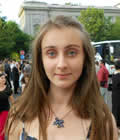

S3 Požega 2015 (16. - 24. srpnja ): PROGRAM
PROJEKTI
- Možemo li pomoći dr. Housu – genomika u medicin
- Biomolekularna arhitektura: zašto neki protein imaju dodatne domene?
- Konstrukcija laserskog zaslona
- Prepoznavanje govora: stvorimo novu SIRI
- Napravi sam svoj bioreactor – možemo li uzgojiti mikroalge koristeći stvari koje nas okružuju?
RADIONICE
Vise informacija uskoro...PREDAVANJA
Vise informacija uskoro...PROJEKTI
Možemo li pomoći dr. Housu – genomika u medicin
 Da li bi ikad kupili istu odjeću koju nosi vaša baka? Vjerojatno ne. No zašto ćemo dobiti isti tretman i iste lijekove kada smo bolesni? Razlog tome je ograničeno znanje znanstvenika i liječnika o individualnoj reakciji pacijenta na različite tretmane. Kao rezultat, pristup medicine je da “jedna mjera odgovara svima”. No, to se trenutno mijenja. Personalizirana medicina postaje precizna i predvidljiva, napravljena posebno za svakog pacijenta. Razumijevanje genetike nam omogućuje bolje dijagnoze, sigurnije propisivanje lijekova, te učinkovitije liječenje bolesti koje su nas pogađale tijekom povijesti. Danas, znanstvenici i liječnici uče kako prekrojiti brigu o zdravlju kako bi odgovarala jedinstvenom genetskom sustavu pacijenta. Razvoj personalizirane medicine ide u smjeru smanjivanja nuspojava te skraćivanja vremena potrebnog za liječenje.
Da li bi ikad kupili istu odjeću koju nosi vaša baka? Vjerojatno ne. No zašto ćemo dobiti isti tretman i iste lijekove kada smo bolesni? Razlog tome je ograničeno znanje znanstvenika i liječnika o individualnoj reakciji pacijenta na različite tretmane. Kao rezultat, pristup medicine je da “jedna mjera odgovara svima”. No, to se trenutno mijenja. Personalizirana medicina postaje precizna i predvidljiva, napravljena posebno za svakog pacijenta. Razumijevanje genetike nam omogućuje bolje dijagnoze, sigurnije propisivanje lijekova, te učinkovitije liječenje bolesti koje su nas pogađale tijekom povijesti. Danas, znanstvenici i liječnici uče kako prekrojiti brigu o zdravlju kako bi odgovarala jedinstvenom genetskom sustavu pacijenta. Razvoj personalizirane medicine ide u smjeru smanjivanja nuspojava te skraćivanja vremena potrebnog za liječenje.
Dunja Vučenović
Sveučilište u Zagrebu, Hrvatska
Dunja Vučenović je studentica diplomskog studija molekularne biologije na Prirodoslovno-matematičkom fakultetu u Zagrebu. Tijekom studija zainteresirala se za -OMICs (genomiku i proteomiku) područja. Njena S3 priča počinje još u osnovnoj školi, kada je bila polaznik S3-a 4 godine zaredom. Prošle godine Dunja se pridružila Društvu EVO, te je organizirala nekoliko radionica na Znanstvenom pikniku. U slobodno vrijeme voli kuhati i eksperimentirati s različitim internacionalnim jelima, putovati i uživati u prirodi.
Biomolekularna arhitektura: zašto neki protein imaju dodatne domene?
 Genetska informacija sačuvana je u obliku DNA molekula. Svaka DNA molekula je građena od nukleotida, i upravo njihov redoslijed (sekvenca) sadrži tu važnu informaciju. U svakoj stanici, sekvenca DNA je prepisana u sekvence mRNA molekula, koje su uz pomoć ribosoma odgovorne za sintezu proteina. Genetska informacija u obliku redoslijeda nukleotida mRNA prevodi se u redoslijed aminokiselina koje grade proteine. U tom procesu prevođenja, molekula tRNA sudjeluje kao adaptor, prenoseći odgovarajuću aminokiselinu do ribosoma. Vjerodostojni prijenos genetske informacije je osiguran kroz aktivnost enzima koji spajaju aminokiseline s odgovarajućim tRNA molekulama. Upravo neki od tih enzima su uključeni u razvoj bolesti (npr. neuralne patologije), što stavlja naglasak na važnost njihovog istraživanja.
Genetska informacija sačuvana je u obliku DNA molekula. Svaka DNA molekula je građena od nukleotida, i upravo njihov redoslijed (sekvenca) sadrži tu važnu informaciju. U svakoj stanici, sekvenca DNA je prepisana u sekvence mRNA molekula, koje su uz pomoć ribosoma odgovorne za sintezu proteina. Genetska informacija u obliku redoslijeda nukleotida mRNA prevodi se u redoslijed aminokiselina koje grade proteine. U tom procesu prevođenja, molekula tRNA sudjeluje kao adaptor, prenoseći odgovarajuću aminokiselinu do ribosoma. Vjerodostojni prijenos genetske informacije je osiguran kroz aktivnost enzima koji spajaju aminokiseline s odgovarajućim tRNA molekulama. Upravo neki od tih enzima su uključeni u razvoj bolesti (npr. neuralne patologije), što stavlja naglasak na važnost njihovog istraživanja.
Ovaj projekt bavit će se istraživanjem jednog od enzima koji katalizira stvaranje kovalentne veze između aminokiselina i tRNA. Eksperimentalni dio projekta počet će s uzgojem genetički modificiranih bakterija koje produciraju velike količine proteina od interesa. Protein će nakon toga biti izoliran i pročišćen od ostalih bakterijskih proteina, te ćemo odrediti njegov afinitet za tRNA molekule. Eksperimentalni rezultati će biti dodatno potvrđeni računalnim analizama gdje ćemo simulirati kretanje našeg proteina. Drugim riječima, istražit ćemo molekularne interakcije proteina na razini atoma korištenjem podataka o njegovoj molekularnoj dinamici.
Nikolina Sostaric
Sveučilište u Zagrebu, Hrvatska
Nikolina je studentica 5. godine kemije na Prirodoslovno-matematičkom fakultetu u Zagrebu. Bila je voditeljica radionice na Ljetnoj školi znanosti 2013. godine (s3++ kamp), a osim toga Nikolina je volontirala i u studentskom projektu Znanstvene čarolije te trenutno radi kao mentorica u 5. Gimnaziji u Zagrebu. Njeni znanstveni interesi pokrivaju kinetiku enzimskih reakcija, molekularne simulacije te statističku analizu bioloških podataka. U slobodno vrijeme voli čitati, kuhati i crtati.
Konstrukcija laserskog zaslona
 Laserski zasloni u principu su jednostavni: sastoje se od lasera usmjerenog u dva zrcala, pri čemu jedno zrcalo vibrira po horizontalnoj osi, dok drugo vibrira po vertikalnoj osi. Laserska zraka tako tvori zaslon. Uključujući, te zatim isključujući laser u pravom trenutku možete nacrtati bilo koju sliku na ekranu. Uzmete li crveni, zeleni i plavi laser, možete napraviti svoj vlastiti TV u boji! U praksi, stvari nikad nisu tako jednostavne. Kako napraviti i kontrolirati zrcala koja pri tome vibriraju extremno visokim frekvencijama? Kako sinkronizirati zrcala i lasere? Kako zapravo miješati boje? Uspijete li odgovoriti na ta pitanja, moći ćete napraviti svoj malen no moćan prijenosni projektor.
Laserski zasloni u principu su jednostavni: sastoje se od lasera usmjerenog u dva zrcala, pri čemu jedno zrcalo vibrira po horizontalnoj osi, dok drugo vibrira po vertikalnoj osi. Laserska zraka tako tvori zaslon. Uključujući, te zatim isključujući laser u pravom trenutku možete nacrtati bilo koju sliku na ekranu. Uzmete li crveni, zeleni i plavi laser, možete napraviti svoj vlastiti TV u boji! U praksi, stvari nikad nisu tako jednostavne. Kako napraviti i kontrolirati zrcala koja pri tome vibriraju extremno visokim frekvencijama? Kako sinkronizirati zrcala i lasere? Kako zapravo miješati boje? Uspijete li odgovoriti na ta pitanja, moći ćete napraviti svoj malen no moćan prijenosni projektor.
 Renan Gross
Renan Gross
Technion – Izraelski Tehnološki Institut, Izrael
Renan Gross trenutno završava preddiplomski studij matematike i fizike na Technionu – Izraelskom Tehnološkom Institutu. Zanimaju ga sva područja znanosti, od matematike i računalstva do fizike i biologije. U slobodno vrijeme piše blog o znanosti, politici i životu, svira klavir te povremeno recitira poeziju. Renan je dosada sudjelovao na Ljetnoj školi znanosti tri puta: kao voditelj radionice 2011., te kao voditelj projekta 2012. i 2013.
Prepoznavanje govora: stvorimo novu SIRI
 Osnovna svrha računala je da nam olakšaju život. Kako bi to bilo moguće, ona trebaju informaciju o rješavanju problema, te zbog toga naša komunikacija s računalnom treba biti jednostavna. Prva računala nisu imala niti tipkovnicu niti ekran, te se unos podataka sastojao od spajanja žica na različiti način. Mnogo se toga promijenilo od tih davnih dana. Danas, uz tipkovnicu, ekran i miš, možemo koristit dodir, 3D kamere te kontrolu glasom kako bismo komunicirali s računalom. Prepoznavanje govora još uvijek zvuči kao znanstvena fantastika, iako i to sve brže postaje dio našeg svakodnevnog života. Primjerice, navedeno možemo već vidjeti na Siri i Google Now - virtualnim osobnim asistentima. Prepoznavanje govora koristi se također u telefonskim centralama, za automatsko titlovanje te automatsko prevođenje. Automatsko prevođenje omogućuje razgovor između ljudi koji ne koriste isti jezik – računalo interpretira govor, prevodi ga i potom govori drugim jezikom.
Osnovna svrha računala je da nam olakšaju život. Kako bi to bilo moguće, ona trebaju informaciju o rješavanju problema, te zbog toga naša komunikacija s računalnom treba biti jednostavna. Prva računala nisu imala niti tipkovnicu niti ekran, te se unos podataka sastojao od spajanja žica na različiti način. Mnogo se toga promijenilo od tih davnih dana. Danas, uz tipkovnicu, ekran i miš, možemo koristit dodir, 3D kamere te kontrolu glasom kako bismo komunicirali s računalom. Prepoznavanje govora još uvijek zvuči kao znanstvena fantastika, iako i to sve brže postaje dio našeg svakodnevnog života. Primjerice, navedeno možemo već vidjeti na Siri i Google Now - virtualnim osobnim asistentima. Prepoznavanje govora koristi se također u telefonskim centralama, za automatsko titlovanje te automatsko prevođenje. Automatsko prevođenje omogućuje razgovor između ljudi koji ne koriste isti jezik – računalo interpretira govor, prevodi ga i potom govori drugim jezikom.
Cilj ovog projekta je dizajn vlastitog osobnog asistenta – računalnog programa kojem možemo zadati govorne naredbe. Kako bismo to postigli, programirat ćemo mapiranje vlastitih glasova, riječi i rečenica koristeći mobitel. Program će nakon toga koristiti strojno učenje, što znači da će pokušati naučiti naredbe iz naših glasova. Napravit ćemo set eksperimenata kako bismo odredili koje tehnike su najbolje, tj. koji mobiteli, riječi ili rečenice su najoptimalniji za sustav, kako bi naš osobni asistent mogao izvršavati različite zadatke na najbolji mogući način.
 Jessa Bekker
Jessa Bekker
KU Leuven, Belgija
Jessa je završila studij računarstva na KU Leuven u Belgiji. Trenutno je doktorand i asistent na istoj instituciji. Njeno istraživačko područje je strojno učenje, gdje se fokusira na brza predviđanja. Osim što podučava studente inžinjerstva, ona je i CoderDojo, odnosno mentor mladih programera. U slobodno vrijeme, Jessa voli provoditi vrijeme sa svojim prijateljima, putovati i svirati klavir.
Napravi sam svoj bioreactor – možemo li uzgojiti mikroalge koristeći stvari koje nas okružuju?
Mnoge stvari koje koristimo u svakodnevnom životu napravljene su pomoću mikroorganizama: kruh, pivo, inzulin, biogoriva te mnogo drugih korisnih produkata. Kako bi produkcija bila što učinkovitija, moramo razmisliti kako ćemo točno uzgojiti mikroorganizme da bi rasli što bolje. Naravno, nisu svi organizmi isti, što znači da zahtijevaju različite okoline. U tu svrhu, moramo testirati različite uvjete života kako bi rasli što sretnije. Trebaju li šećere? Određen pH? Trebaju li kisik i koliko kisika? Kakav bioreaktor će biti dovoljno dobar da odgovara njihovim potrebama?
Koristeći mikroalge, u ovom projektu ćemo pokušati odgovoriti na navedena pitanja. Mikroalge su jednostanični organizmi koji rastu uz pomoć svjetlosti, koristeći pritom fotosintezu. Unatrag nekoliko godina, mirkoalge su postale veoma popularne jer se mogu iskoristiti u svrhu produkcije dodataka prehrani (npr. karotena) i biogoriva. Unutar ovog projekta, najprije ćemo iskoristiti znanje o algama kako bismo dizajnirali bioreaktor. Nakon gradnje vlastitog bioreaktora, testirat ćemo različite uvjete kako bismo optimizirali njihov rast. Po završetku projekta, saznat ćemo koji su najbolji uvjeti proizvodnje te kako ih možemo najučinkovitije uzgojiti.
Marieke Francisca Buffing
ETH Zürich, Švicarska
Marieke je studirala biotehnologiju na Wageningen Sveučilištu u Nizozemskoj gdje je i diplomirala procesno inžinjerstvo i molekularnu biotehnologiju. Tijekom diplomskog rada postala je dodatno zainteresirana za stanične mehanizme adaptacije okolini. Trenutno izradjuje doktorat na institutu ETH u Zürichu, gdje pokušava saznati kako različite vrste bakterija koriste interakcije proteina i metabolita kako bi uspjele brzo reagirati na promjenu okoline. Kad nije u laboratoriju, Marieke voli posjećivati muzeje i trčati u šumi oko kampusa.
Copyright © 2014 Društvo za edukaciju van okvira (EVO). Sva prava pridržana.
Web dizajn: Martina Mijušković. Općeniti tekst: Branimir Lukić i Martina Mijušković. Prijevod na hrvatski: Matilda Maleš.